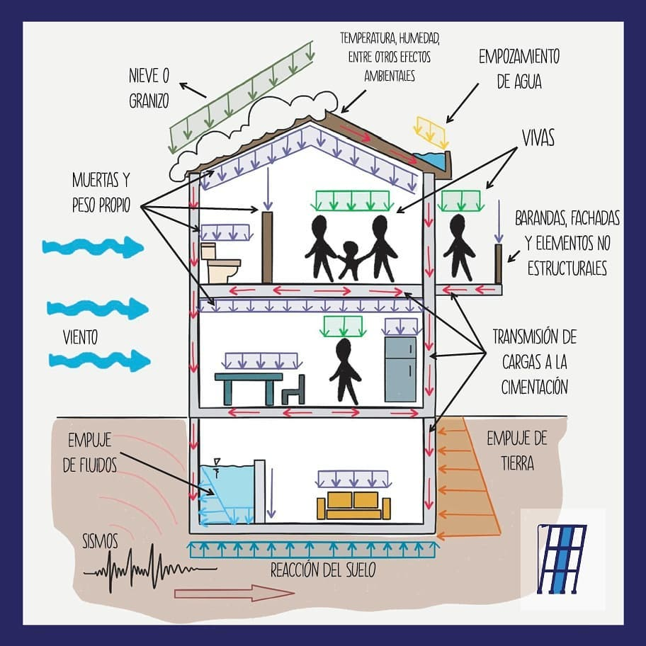
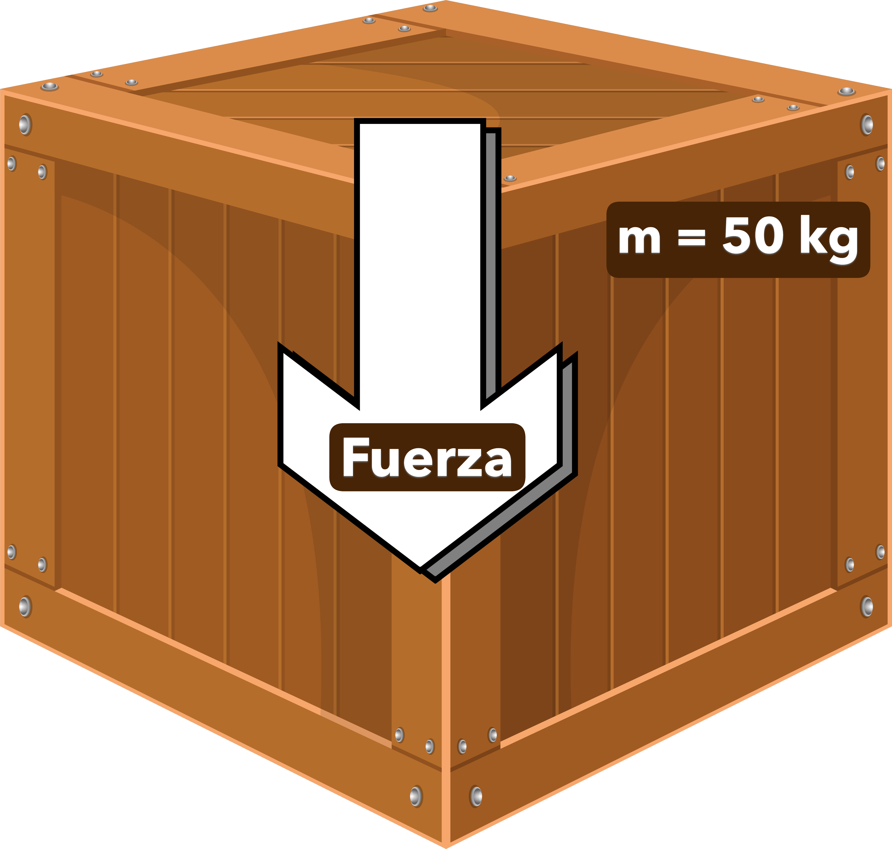
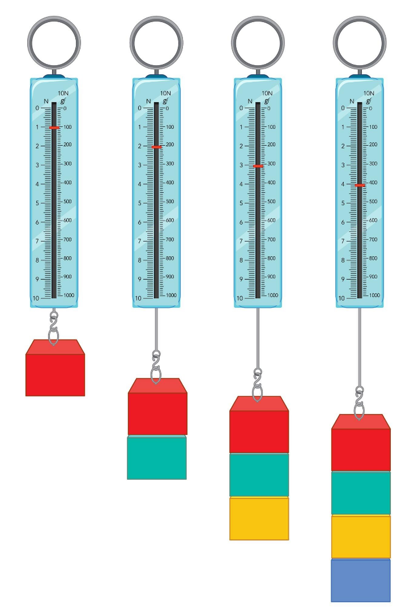

2. FUERZAS Y CARGAS
¿Qué es una fuerza?

¿Has intentado alguna vez abrir una puerta muy pesada o empujar una caja? ¿O has sentido cómo el viento te empuja mientras caminas? En ambos casos estás experimentando algo fundamental en la física: las fuerzas. Las fuerzas están presentes en cada momento de nuestras vidas, desde que nos levantamos por la mañana hasta que nos acostamos por la noche: cuando sujetas un libro, cuando la gravedad tira de ti al suelo, o cuando el viento mueve las ramas de un árbol.
Fuerzas que nos rodean constantemente
Desde el momento en que despiertas, estás rodeado de fuerzas invisibles que actúan constantemente:
🌍 La gravedad: Es quien origina el peso de los objetos y hace que caigan al suelo. Sin ella, estaríamos flotando como los astronautas en el espacio.
🌬️ El viento: Empuja objetos y estructuras. Puede ser tan suave como una brisa o tan poderoso como un huracán que mueve edificios enteros.
💪 La fuerza muscular: Cada vez que empujas, tiras o saltas, generas fuerzas con tu cuerpo. Es la fuerza que utilizas para escribir, correr o levantar objetos.
🚗 Las fuerzas mecánicas: Mueven las máquinas, desde el motor de un coche hasta las aspas de un ventilador.
⚡ Las fuerzas magnéticas: Como la que atrae un imán hacia el hierro o la que hace funcionar los motores eléctricos.
Definición técnica
Definición
Una fuerza es toda acción capaz de deformar un cuerpo (efecto estático) o de cambiar su estado de movimiento o de reposo (efecto dinámico).
¿Qué pueden provocar las fuerzas?
Las fuerzas causan efectos de dos tipos:
-
Movimiento
Cambian la velocidad o la dirección de un objeto. Por ejemplo:
- Cuando lanzas una pelota, la fuerza de tu mano le da velocidad.
- Cuando frenas en bicicleta, la fuerza de los frenos reduce tu velocidad.
- Cuando el viento cambia la dirección de una cometa.
-
Deformación
Modifican la forma de un objeto temporal o permanentemente:
- Al apretar una esponja, cambias su forma temporalmente.
- Cuando doblas un clip, puede quedar deformado permanentemente.
- Al estirar un chicle, cambia su forma hasta romperse.
¿Qué es una carga?
Las cargas son las fuerzas que actúan específicamente sobre las estructuras artificiales (como puentes, edificios o torres). Cada vez que alguien entra en un edificio o sopla el viento contra una fachada, está aplicando una carga sobre la estructura.

Tipos de cargas
-
Cargas fijas (estáticas):
Son aquellas que siempre están presentes y no varían, como el peso propio de la estructura (paredes, vigas, tejados).
Ejemplos:
- El peso de las columnas de un edificio
- El peso de las vigas del techo
- El peso de las paredes de ladrillo
-
Cargas variables (dinámicas):
Cambian con el tiempo o pueden desaparecer. Por ejemplo:
- El peso de las personas o muebles dentro del edificio
- El viento que sopla sobre un puente
- La nieve o el agua sobre el tejado
- Los vehículos que pasan por un puente
La medición de las fuerzas
La unidad: el Newton
Las fuerzas se miden en newtons (símbolo: \(N\)), en honor a Isaac Newton, el gran físico inglés que formuló las leyes del movimiento.
Definición del Newton:

Imagina que apoyas en el suelo una caja cuya masa es de 50 kg (\(m = 50\ \mathrm{kg}\)). Esta caja ejercerá una Fuerza (\(F\)) sobre el suelo que dependerá de su masa y de la aceleración de la gravedad (\(g=9{,}81\ \mathrm{m/s^2},\ \text{que podemos redondear a}\ 10\ \mathrm{m/s^2}\))
En definitiva, una caja de \(50\ \mathrm{kg}\) de masa, ejercerá una fuerza (peso) hacia el suelo de unos \(500\ \mathrm{N}\).
Ejemplos de fuerzas en newtons
Para que te hagas una idea de lo que representa un newton:
- Una manzana de 200g (0,2 kg): ejerce aproximadamente 2 newtons de fuerza en la Tierra
- Una persona de 62kg: ejerce aproximadamente 620 newtons (su peso)
- Un coche pequeño: puede pesar alrededor de 10,000 newtons
El dinamómetro: midiendo fuerzas 
El dinamómetro es un instrumento que nos permite medir fuerzas de manera directa. Funciona mediante un resorte calibrado que se estira proporcionalmente a la fuerza aplicada.
Efectos de las fuerzas sobre las estructuras
Cuando una estructura soporta fuerzas, pueden ocurrir dos cosas:
✅ Resiste adecuadamente (estructura correcta)
- Mantiene su forma y estabilidad
- Las deformaciones están dentro de límites aceptables
- Cumple su función sin problemas
❌ No resiste bien (estructura inadecuada)
- Se deforma excesivamente
- Puede llegar a romperse
- No cumple con su propósito
Es fundamental que las estructuras estén preparadas para resistir todas las cargas previstas y, si es posible, algunas imprevistas, como terremotos o tormentas fuertes.
Datos impresionantes
🌪️ ¿Sabías que...?
- Un huracán puede generar fuerzas equivalentes a 200 bombas nucleares por día
- La Torre Eiffel se mueve hasta 7 centímetros en días de mucho viento
- Los rascacielos están diseñados para oscilar varios metros sin colapsar
- Un terremoto de magnitud 9 libera la energía equivalente a 56,000 bombas atómicas
Actividades de reflexión
🤔 Piensa y responde:
- Identifica fuerzas: Enumera 10 fuerzas diferentes que actúen sobre ti mientras estás sentado leyendo esto.
- Análisis estructural: Observa un puente cercano. ¿Qué cargas fijas y variables crees que debe soportar?
- Diseño personal: Si tuvieras que diseñar una estructura para resistir vientos de 100 km/h, ¿qué características le darías?
- Experimentación: ¿Cómo podrías demostrar la tercera ley de Newton usando solo objetos de tu casa?
🔬 Experimento en casa:
Prueba de fuerzas:
- Toma diferentes objetos (libros, frutas, etc.)
- Siente su peso (fuerza gravitacional)
- Empújalos sobre diferentes superficies
- Observa cómo la fuerza de fricción cambia según la superficie
Preparándote para lo que viene
En este apartado has aprendido qué son las fuerzas y las cargas, cómo se miden y cómo afectan a nuestro entorno. En los siguientes temas profundizaremos en:
- Cómo las fuerzas generan diferentes esfuerzos en los elementos estructurales
- Los cinco tipos básicos de esfuerzos que deben soportar las estructuras
- Cómo diseñar elementos para resistir cada tipo de esfuerzo
- La relación entre material, forma y resistencia
Conceptos clave para recordar
📝 Glosario del tema:
- Fuerza: Agente capaz de deformar un objeto o modificar su estado de movimiento
- Carga: Fuerza que actúa específicamente sobre una estructura artificial
- Carga fija: No varía con el tiempo (ej.: peso propio de una pared)
- Carga variable: Cambia con el tiempo o el uso (ej.: personas, nieve, viento)
- Newton (N): Unidad de medida de la fuerza en el Sistema Internacional
- Dinamómetro: Instrumento para medir fuerzas mediante un resorte calibrado
- Deformación: Cambio de forma que experimenta un objeto por la acción de una fuerza
- Inercia: Tendencia de los objetos a mantener su estado de reposo o movimiento
¡Excelente trabajo! Has descubierto el fascinante mundo de las fuerzas y cargas. Ahora comprendes por qué las cosas se mueven, se deforman o permanecen en equilibrio. En el próximo apartado aprenderás cómo estas fuerzas se convierten en diferentes tipos de esfuerzos dentro de las estructuras, y cómo los ingenieros diseñan elementos para resistirlos.